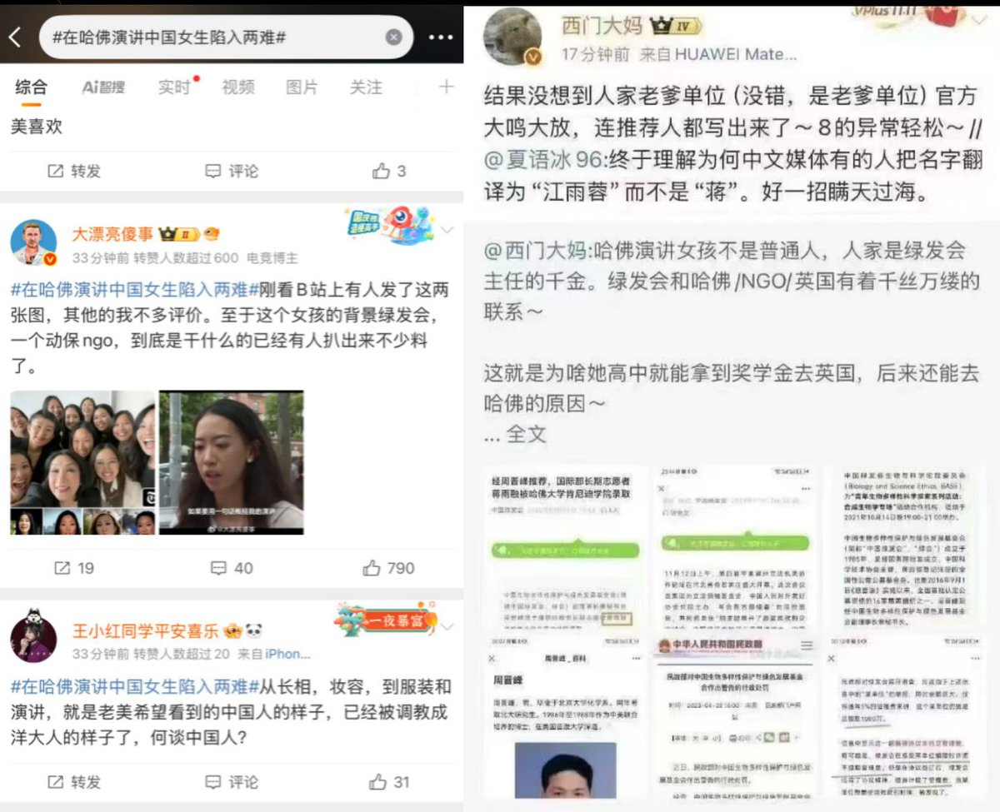
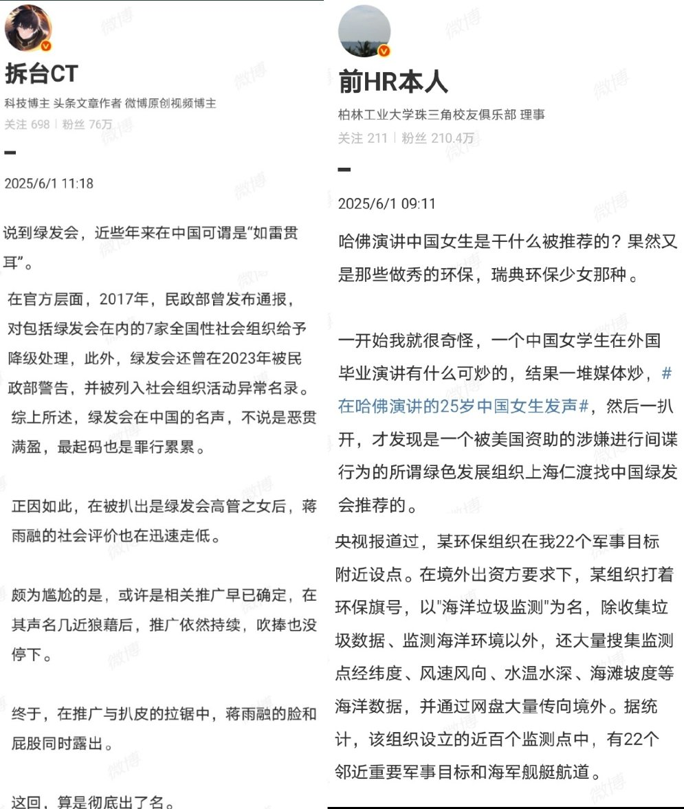
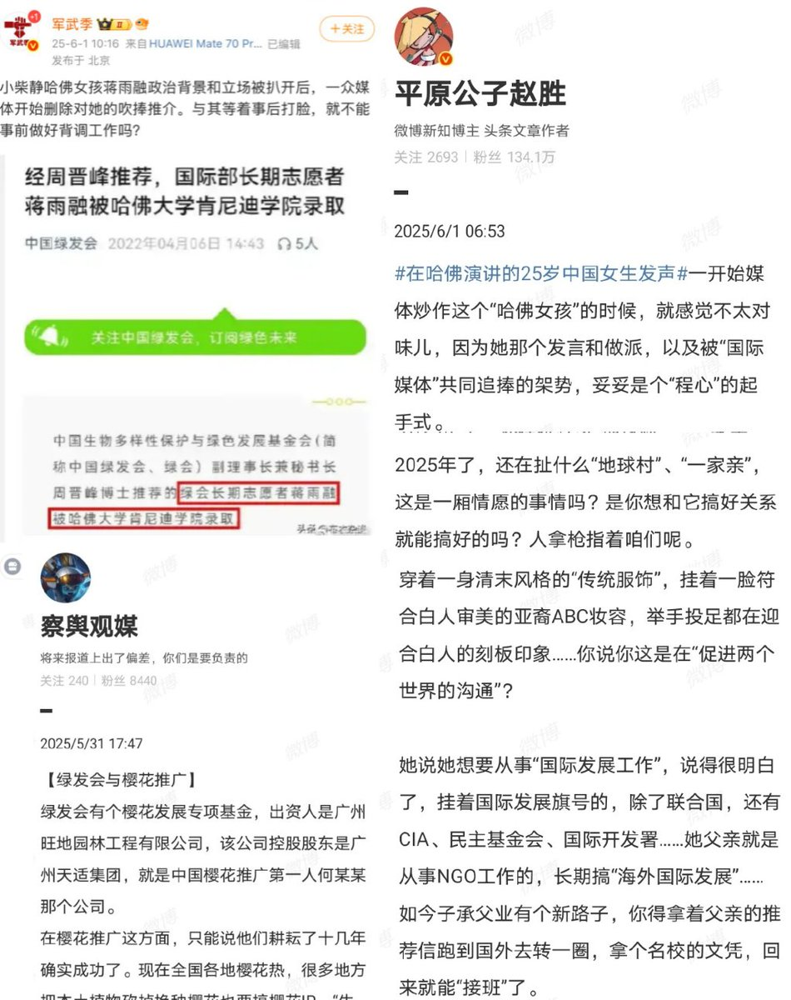

RT @whyyoutouzhele: 近日，“哈佛女孩”蒋雨融在哈佛毕业典礼上的演讲引发热议。在当前中美对抗的大背景下，蒋雨融呼吁“人类同兴共衰”的言论获得了现场喝彩。然而，这一原本正能量的宣传在国内却遭遇大翻车。不仅粉红博主们集体抵制，由于网友扒出其父亲为中国绿发会（由国务…




近日，“哈佛女孩”蒋雨融在哈佛毕业典礼上的演讲引发热议。在当前中美对抗的大背景下，蒋雨融呼吁“人类同兴共衰”的言论获得了现场喝彩。然而，这一原本正能量的宣传在国内却遭遇大翻车。不仅粉红博主们集体抵制，由于网友扒出其父亲为中国绿发会（由国务院批准的全国性公益基金）高管，一众网民们也并不 https://t.co/HPGDyboTz2